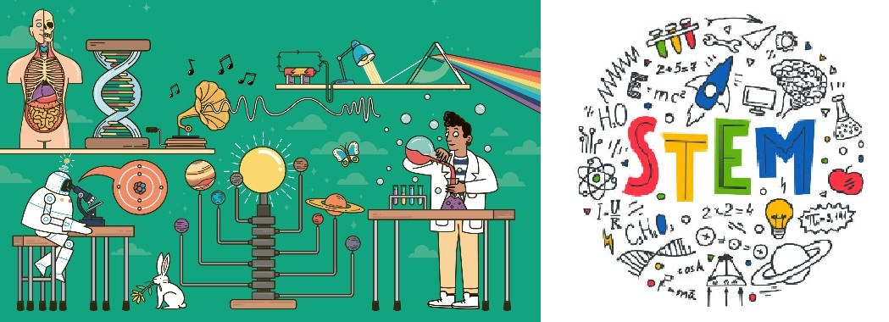
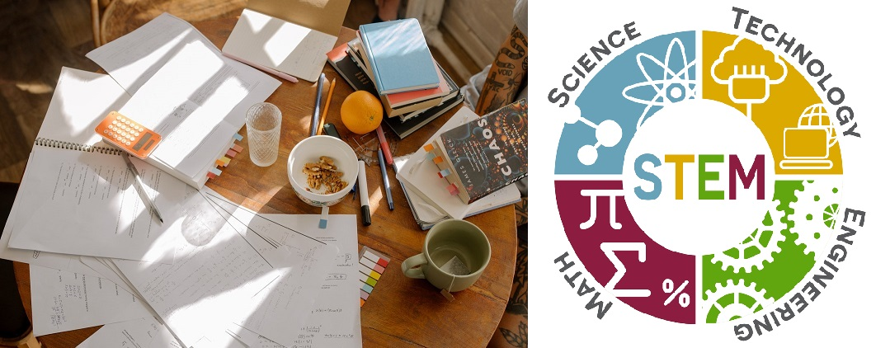

Що таке STEM-освіта та як впровадити її в навчальний процес?
До 2025 року в США потрібно буде прийняти на роботу близько 3,5 мільйонів фахівців із STEM-освітою. Очікується збільшення запиту на випускників за спеціалізацією STEM і в решті частин світу. Звідки такий попит, навіщо дітям STEM-освіта та як кожен вчитель може STEMіфікувати навчальний процес – далі в тексті.
ЩО ТАКЕ STEM-ОСВІТА?
Абревіатура STEM – розшифровується як:
- S – science (наука)
- T – technology (технології)
- Е – engineering (інженерія)
- М – mathematics (математика)
STEM-освіта – це спеціалізований освітній напрямок, головний акцент у якому зроблено на вивченні точних та природничих наук, із додаванням потужного інноваційного та технологічного компонентів. Цілком справедливо казати, що STEM – це найкраще освітнє рішення для сучасних фахівців у галузі техніки та технологій.
Базою для STEM-освіти вступають наукові методи, математичне моделювання, інженерний дизайн та інноваційне мислення. З цього опису може здатися, що йдеться про освіту, призначену винятково для підготовки майбутніх IT-фахівців, і частково це буде правдою. Втім, STEM-освіта є ширшою, адже поєднує точні науки з креативним підходом і сприяє розвитку обох сторін в особистості учнів. Батьки, які переймаються розвитком творчих здібностей дитини, можуть звернутися до засобів SТЕАМ-освіти – відгалуження STEM, в якому розвивають мистецький підхід (A – art, мистецтво).
Зокрема, в європейських країнах засобами STEM навчають і музикантів, і художників, і філологів. А все тому, що дедалі більш потрібними на ринку праці є фахівці, що знаються на технологіях. Бачимо, як уже сьогодні музиканти створюють хіти за допомоги спеціального програмного забезпечення, а лінгвісти – досліджують мову завдяки штучному інтелекту та великим даним. Розвинені країни, як от Сінгапур, США, Ізраїль та Австралія, готують школярів за напрямами STEM-освіти вже десятки років. В Україні STEM-освіта почала офіційно запроваджуватися з 2015 року.
НАПРЯМИ РОЗВИТКУ STEM-ОСВІТИ В УКРАЇНІ
STEM-освіта є невіддільною частиною концепції Нової української школи (НУШ), адже націлена не лише на здобуття знань, а й на одержання компетенцій.
Серед компетенцій НУШ, що перетинаються із цілями STEM:
- Розвиток логічного та математичного мислення;
- Розуміння природи та технологій із позиції точних наук;
- Освіченість в інформаційно-комунікаційних технологіях, уміння їх використовувати;
- Здатність креативно мислити та виражати творчі здібності.
Однією з засадничих задач STEM-освіти є навчити школярів системного мислення. Серед STEM-вправ часто можна знайти завдання, що охоплюють одразу багато сфер, як от побудування теплиці чи проєктування роботи світлофорів на перехресті. Поєднуючи різні науки та погляди на реальність, STEM-освіта вчить дітей жити у світі, що стрімко розвивається; легко і швидко адаптуватись до новітніх технологій і трендів.
Що STEM-освіта дає дітям?
- Більш ефективне засвоєння навчального матеріалу;
- Комплексне розуміння предметів та процесів;
- Цікавий навчальний процес і мотивацію вчитися;
- Оригінальність, мислення поза шаблоном;
- Уміння формулювати дослідницьке питання та комплексно шукати рішення;
- Широкі можливості здобути престижну вищу технічну освіту в найкращих вишах країни та за кордоном та знайти високооплачувану роботу в будь-якій країні світу.
Вчителям STEM-освіта дозволяє:
- Наочно передавати знання й навички, сприяти самостійності;
- Використовувати неординарні підходи в навчанні;
- Навчати більш мотивованих та зацікавлених учнів;
- Відходити від стандартних систем оцінювання за відтворені знання, натомість – сприяти креативності.
Принципи STEM можна запроваджувати як на уроках з інформатики та математики, так і на уроках української мови; і в початковій школі, і в старших класах. Де б ви не використовували інструменти STEM, вони урізноманітнять навчальний процес та унаочнить знання, тим самим зробивши їх більш доступними для розуміння та запам’ятовування.
STEM-ОСВІТА В ПОЧАТКОВІЙ ШКОЛІ
Застосовуючи STEM із маленькими школярами, важливо не обтяжувати їх складними процесами та довгими поняттями. Ціль вчителя у STEM-освіті для дошкільнят чи школярів початкової школи – продемонструвати та максимально просто пояснити зв’язки між процесами, а також – посприяти самостійності в навчанні. Цим цілям якнайкраще відповідають досліди. От лише кілька прикладів:
Хмара в банці
Налийте в банку третину гарячої води, а зверху на сіточку чи марлю покладіть шматочки льоду. Незабаром ви побачите, як у банці з’являється справжня хмаринка. Якщо ви приберете кришку, хмаринка вилетить і розсіється в повітрі. На цьому прикладі ви зможете пояснити дітям колообіг води в природі, а також наочно показати, як вона стає парою, льодом і, зрештою, знову водою. Крім того, діти зрозуміють, як працюють природні явища, як от дощ, туман, сніг чи ожеледиця.
Вода й олія
Налийте в склянку воду, а потім – додайте олії. Попросіть дітей перемішати олію у воді, а потім, коли їм це не вдасться, запропонуйте вичерпати олію з води за допомоги ложки чи губки. Цей дослід продемонструє дітям різні властивості, що їх можуть мати рідини. На основі цього прикладу також вчителю буде легко пояснити, яку екологічну небезпеку становить нафта, що потрапляє у водні ресурси, обтягує їх плівкою та не пропускає кисень, необхідний для нормальної життєдіяльності флори й фауни.
СПОСОБИ ВПРОВАДЖЕННЯ МЕТОДІВ STEM ОСВІТИ В ШКОЛАХ УКРАЇНИ
Впровадити методи STEM-освіти в загальний освітній процес не важко, потрібна лише мотивація вчителя, творчий підхід до пояснення навчального матеріалу та вміння пояснювати учням зв’язки між предметами та дисциплінами у вивченні конкретних процесів.
STEM-освіта на уроках математики
Математику рідко називають улюбленим предметом. Вона вимагає максимальної концентрації, а також – вміння абстрактно мислити, що багатьом дітям дається нелегко. У цьому випадку методи STEM освіти можуть допомогти і краще зрозуміти, і полюбити математику. Для учнів середньої школи українські педагоги та методисти радять проводити серію практичних занять «Моя ферма», у якому їм слід буде підрахувати, скільки домашніх тварин потрібно утримувати та скільки різного корму для них потрібно придбати та заготовити впродовж року, аби родина з п’яти людей могла харчуватися яйцями, молочними продуктами та м’ясом. Розширити завдання можна, додавши до нього також підрахунки фруктів та овочів, і відповідно – витрат на утримання саду й городу, а також – необхідної площі для пасовиськ та вирощування. У цьому завданні учні працюватимуть на перетині біології та математики, але наочність завдання допоможе їм ефективніше концентруватися та краще засвоювати новий матеріал.
STEM-освіта на уроках англійської мови
Оскільки процес вивчення іноземної мови використовує мовленнєві компетенції водночас і як засіб, і як ціль навчання, простору для застосування методів STEM-освіти на уроках англійської мови є безліч. Починаючи із проведення уроків із біології, хімії чи фізики англійською мовою та використання застосунків для вивчення мови, як от Quizlet, і завершуючи створенням технологічних проєктів та презентацій англійською. Готуючи власні проєкти про технології, архітектуру чи програмування англійською, діти зможуть не лише покращити навичку говоріння, вивчити специфічну лексику та познайомитися із різними сферами застосування технічних знань, а і зрозуміють широкі перспективи для досліджень та творчості, що їх відкриває знання англійської мови. Розуміючи це, вони матимуть більшу мотивацію у вивченні не лише англійської, а й інших іноземних мов.
STEM-освіта на уроках інформатики
Уроки інформатики – плідне поле для застосування методів STEM-освіти, адже технології та програмування складають її основу. Педагоги радять вчителям не зупинятись лише на програмуванні, натомість – використовувати засоби 3D-моделювання, наприклад, вивчаючи людське тіло на сайті Zygote Body, або моделюючи геометричні фігури самостійно на сайті Geogebra.
STEM-освіта на уроках української мови
Застосувати методи STEM-освіти на уроках української можливо за допомоги дослідження словотвору, а саме – вивчення та аналізу англомовних та російськомовних запозичень і пошуку відповідників українського походження. Упродовж цього процесу учні зрозуміють, як розвивається мова та як мовці впливають на цей процес. Крім того, зацікавлять дітей у роботі зі словниками, різними версіями правописів та тематичними сайтами, як от Словотвір. Ви також можете познайомити учнів із різними культурами та жанрами, запропонувавши їм скласти українською сонет чи японське хоку.
STEM-освіта на уроках фізики та хімії
Досліди, що їх часто проводять у шкільних лабораторіях, з легкістю можна віднести до методів STEM-освіти. Удосконалити їх або адаптувати до дистанційного формату навчання можна, віддавши учням ініціативу та попросивши їх провести досліди самостійно. Школярі можуть створити маятник вдома за допомоги мотузки й м’яча, щоби вивчати коливання та амплітуди. Таймер на смартфоні в поєднанні із камінцем можуть стати базою для вивчення вільного падіння, а два магніти – основою для розуміння магнітних явищ.
Головна ціль STEM-освіти – виховати учня, здатного самостійно опановувати великі масиви інформації, вміти користуватися новими технологіями та творчо підходити до пошуку рішень.